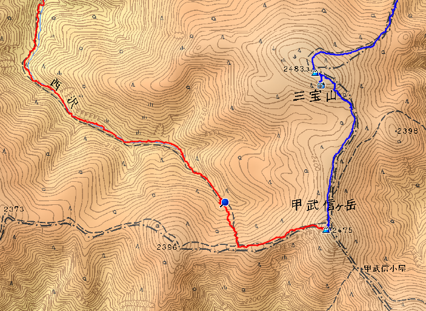

このサイトでは、Garmin GPSなどのハンディGPSや、スマホのGPSアプリで記録したログ（軌跡データ）をWeb地図に上乗せして表示する方法を説明しています。GPSログをWeb地図上に表示する機能は、ヤマレコやヤマップなどの登山SNSでは標準となっていますが、自サイトに自前で設置する場合について説明します。なお、本サイトではGPSログを表示した地図一般を「ルート地図」と称しています。
本サイトでは、Web地図として、JavaScriptライブラリ（OpenLayers、Leaflet）と地図タイル画像（地理院タイル、OpenStreetMap、OpenTopoMapなど）を組み合わせたもの（いずれもフリーで利用可）と、Web地図APIを介して独自の地図を表示するタイプのGoogleマップ、Bingマップを対象として、ルート地図の設置方法を説明しています。GPSログはHTMLファイルとは別の外部ファイルとし、JavaScriptで読み込んで上乗せ表示します。データと表示ロジックのファイルを分けることにより、ユーザインターフェースの変更などが容易になります。この外部ファイルの形式としてはGPXやKML、GeoJSONなどがあり、本サイトではGeoJSONを用いた場合について、ルート地図の設置例を紹介します。
本サイトの内容は、ハンディGPSやGPSアプリからのログの取り込み、編集、ファイル保存にカシミール3Dを利用することを前提としています。カシミール3Dで作成したルート地図を、単に画像としてウェブページに貼り付けるのではなく、スクロールやズームイン、ズームアウト等の操作が可能なWeb地図として表示することが本サイトの目標です。
カシミール3Dには、GPSログをGPX形式やKML形式でファイルに保存する機能があります。しかし、(1) トラック、ウェイポイント、ルートをまとめて一つのファイルに保存できない、(2) トラックのポイントを間引く機能がない、(3) KML形式の保存は実験的な実装？で標準に準拠していない、という問題点があり、そのままWeb地図の上乗せデータに用いるのは不都合があります。また、GeoJSON形式で保存する機能は今のところありません。そのため、カシミール3Dで保存した複数のGPXファイルを、トラックのポイントを間引きつつ、1つのGeoJSON（あるいはKML）ファイルに変換するツールが必要になります。
KMLへの変換については、既にGPX2JSGI（GPX→KMLコンバータ）を開発していて、フリーソフトウェアとして公開しています。当初は電子国土Webシステム独自のJSGI形式への変換ツールとして2008年1月に公開し、その後、KMLへの変換機能を追加したものです。これは、筆者のホームページ「あにねこ登山日誌」に、山行記録に添えるルート地図を見栄え良く、かつ少ない手間で掲載したい、と思ったことがきっかけで開発したものです。
2019年2月に、ホームページで用いる上乗せデータの形式をKMLからGeoJSONに切り替えたことに伴い、新たにGPX2GeoJSON（GPX→GeoJSONコンバータ）を開発したので、フリーソフトウェアとして公開し、このサイトの内容もGeoJSONをメインに据えて一新しました。なお、旧サイトも引き続き閲覧可能です。
このサイトの読者については、ハンディGPSやGPSアプリ、カシミール3Dの操作方法、および初歩のウェブページ作成、HTML、JavaScriptについての基礎知識があることを想定しています。これらの知識については、必要に応じて他の情報源を参照して下さい。
このサイトと、このサイトで設置方法を説明するルート地図はHTML5とJavaScript（ES2015）で記述され、以下のブラウザで閲覧した際に適切に表示されます。ルート地図はモバイルデバイスでも閲覧可能で、タッチパネルでスクロールやズームなどの操作ができます。
なお、IE11は最新のWeb標準をサポートしていないので、モダンブラウザ（EdgeやFirefox、Chrome）への移行がマイクロソフトから推奨されています（Internet Explorer の今後について）。
このサイトの管理人の使用機材は下記のとおりです。主にこの環境で動作確認を行っています。
図1は、カシミール3Dで作成したルート地図を範囲を指定して画像ファイルとして保存し、HTMLのimg要素として表示したものです。トラックの往路を赤、復路を青に色付けし、ウェイポイントにアイコン画像を表示しています。
図2は、同じルート地図を構成するGPSデータ（トラック、ウェイポイント）をGPXファイルとして保存し、GPX2GeoJSONでGeoJSON形式に変換して、OpenLayersを用いて地理院地図に重ね合わせたルート地図です。比較のため、図1の表示領域は図2の範囲に合わせてあります。
図2のルート地図では、マウス左ボタンを押しながら地図をドラッグすると、滑らかにスクロールさせることができます。また、➕、➖ボタンをクリックしたり、マウスホイールを回転させると、地図のズームイン、ズームアウトができます。地図上のアイコンをクリックすると小窓がポップアップして、地名や簡単な説明が表示されます。上部の「マップ」から選択して、種類の異なる地図や航空写真へ切り替えることができます。その他、OpenLayersでは、Shift+Altキーを押しながらマウスの左ボタンで地図を回転させることができ、右上の回転した⇧ボタンを押すと元に戻ります。
|  図1 カシミール3D【解説本】2万5千地形図 |
図2 OpenLayers + GeoJSON |
図2のルート地図を表示するのに必要な作業は、(1)必要なファイルをサイトに転送し、(2)対象ページ（index.html）の表示したい位置に次のHTMLコードを追加するだけです。(2)は至極簡単ですね。
<iframe width="640" height="480" style="border:none;" src="omap_ex2.html?lat=35.913163&lon=138.721400&zoom=15&url=share/routemap.geojson"> </iframe>
omap_ex2.htmlはルート地図を表示する中核のHTMLファイル、routemap.geojsonはGeoJSONファイルです。これらのファイルはサンプルとして、GitHubから一括ダウンロード可能です。詳細は設置方法を参照して下さい。
この他の各方式のルート地図についても、表1に作成例を示します。参考のため、上乗せ形式がKMLの場合のルート地図も示します。○をクリックすると、新しいウィンドウがポップアップしてルート地図を表示します。ウィンドウを閉じるには、ブラウザ標準の「閉じるボタン」を使って下さい。これらの表示に必要なファイルも、GitHubから一括ダウンロードした中に含まれています。
| 名称 | ライブラリ / API ドキュメント |
APIキー | 地図タイル | 上乗せ形式 | 備考 | ||
|---|---|---|---|---|---|---|---|
| XYZ ※1 | その他 | KML | GeoJSON | ||||
| OpenLayers | OpenLayers v6.1.1 | 不要 | ○ | Bing ※2 | ○ | ○ ※3 | |
| Leaflet | Leaflet 1.6.0 | 不要 | ○ | Bing ※2 | ○ | ○ | |
| Googleマップ (Goole Maps Platform) |
Maps JavaScript API v3.35 | 要 ※4 | − | 独自 | ○ | ○ | 従量課金制 ※5 |
| Yahoo!地図 (Yahoo! Open Local Platform) |
Yahoo! JavaScriptマップAPI | 要 | OSM | 独自 | ○ | − | 利用制限あり ※6 |
| Bingマップ (Bing Maps) |
Bing Maps V8 Web Control | 要 ※7 | ○ | 独自 | ○ | ○ | 利用制限あり ※8 |
omap_ex2.htmlを利用している。GPSとWeb地図の利用に関連する情報、活用事例へのリンクです（随時、追加中）。なお、当サイトへのリンクは御自由にどうぞ。リンクの際にもしバナーが必要でしたら、右のリンクバナーをご利用下さい。
| 2019-12-29 | OpenLayers 6.1.1、Leaflet 1.6.0にバージョンアップ。 Bingマップ版の不具合（The specified credentials are invalid.）を改訂。 |
| 2019-07-07 | サイトを全面的に改訂。GPX2GeoJSONを公開。 |
{kind=link}